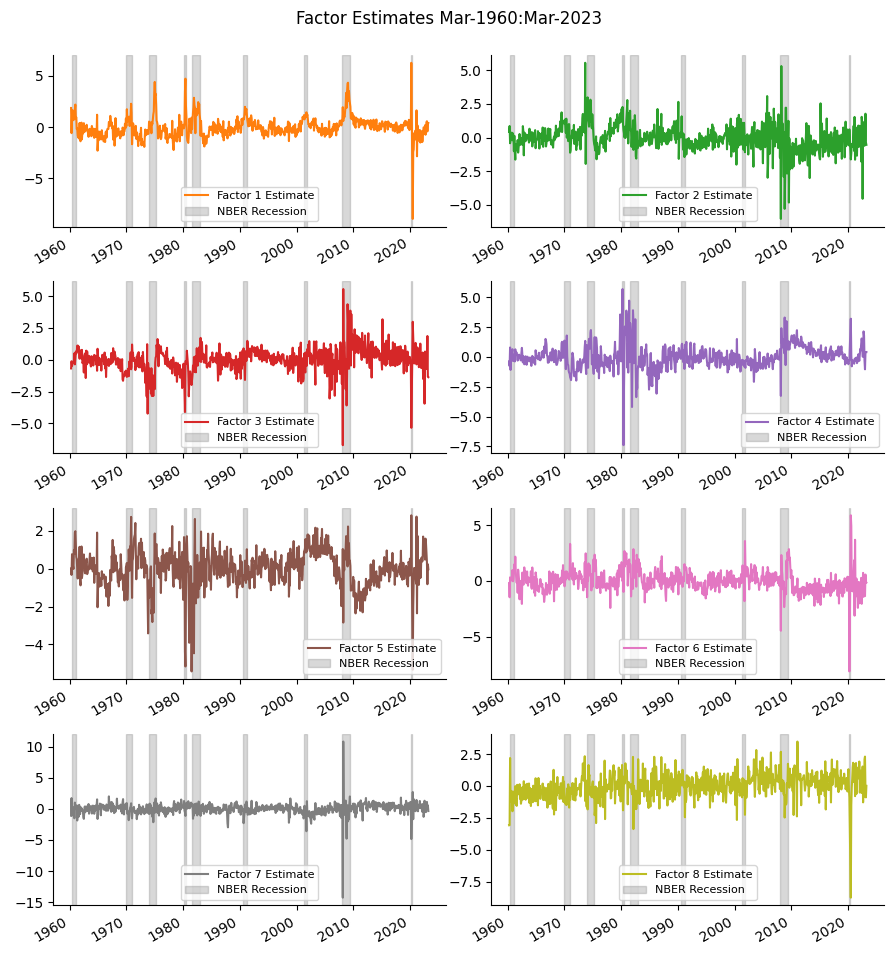

Approximate Factor Models#
UNDER CONSTRUCTION
PCA, EM
Approximate factors and selection: Bai and Ng (2002), McCracken and Ng (2016)
import numpy as np
import pandas as pd
from pandas import DataFrame, Series
import matplotlib.pyplot as plt
from finds.readers.alfred import Alfred, fred_md, fred_qd
from finds.econs import factors_em, mrsq, select_bai_ng, integration_order
from finds.filters import remove_outliers, is_outlier
from finds.unstructured.store import Store
from finds.misc.show import Show
from secret import credentials, paths
show = Show(ndigits=4, latex=None)
VERBOSE = 0
# %matplotlib qt
imgdir = paths['images'] / 'ts'
alf = Alfred(api_key=credentials['fred']['api_key'], verbose=-1)
store = Store(paths['scratch'])
FRED-MD#
Transformation Codes
Stationarity, Integration Order
## Transformation Codes, and Stationarity
qd_df, qd_codes = fred_qd() # 202004
md_df, md_codes = fred_md() # 201505
qd_date = max(qd_df.index)
md_date = max(md_df.index)
print(f"Number of series by suggested tcode transformations ({md_date}):")
tcodes = pd.concat([Series(alf.tcode[i], name=i).to_frame().T
for i in range(1, 8)], axis=0).fillna(False)
tcodes = tcodes.join(qd_codes['transform'].value_counts().rename('fred-qd'))\
.join(md_codes['transform'].value_counts().rename('fred-md'))\
.fillna(0)\
.astype({'fred-qd': int, 'fred-md': int})\
.rename_axis(index='tcode')
show(tcodes)
quarterly/current.csv
monthly/current.csv
Number of series by suggested tcode transformations (20230630):
| diff | log | pct_change | fred-qd | fred-md | |
|---|---|---|---|---|---|
| tcode | |||||
| 1 | 0 | 0 | False | 22 | 11 |
| 2 | 1 | 0 | False | 32 | 19 |
| 3 | 2 | 0 | False | 0 | 0 |
| 4 | 0 | 1 | False | 0 | 10 |
| 5 | 1 | 1 | False | 141 | 53 |
| 6 | 2 | 1 | False | 50 | 33 |
| 7 | 1 | 0 | True | 1 | 1 |
## Verify integration order
out = {}
for label, df, transforms in [['md', md_df, md_codes['transform']],
['qd', qd_df, qd_codes['transform']]]:
stationary = dict()
for series_id, tcode in transforms.items():
if tcode in range(1, 8):
s = np.log(df[series_id]) if tcode in [4, 5, 6] else df[series_id]
order = integration_order(s.dropna(), pvalue=0.05)
expected_order = 2 if tcode == 7 else ((tcode - 1) % 3)
stationary[series_id] = {'tcode': tcode,
'I(p)': order,
'different': order - expected_order,
'title': alf.header(series_id)}
# print(series_id, tcode, expected_order, order)
stationary = DataFrame.from_dict(stationary, orient='index')
stationary = stationary.sort_values(stationary.columns.to_list())
c = stationary.groupby(['tcode','I(p)'])['title'].count().reset_index()
out[label] = c.pivot(index='tcode', columns='I(p)',
values='title').fillna(0).astype(int)
out[label].columns=[f"I({p})" for p in out[label].columns]
print('Series by tcode, transformations and estimated order of integration:')
results = pd.concat([tcodes.drop(columns='fred-md'),
out['qd'],
tcodes['fred-md'],
out['md']], axis=1).fillna(0).astype(int)
show(results,
caption='FRED-MD order of integration, transformations and frequency')
Series by tcode, transformations and estimated order of integration:
| diff | log | pct_change | fred-qd | I(0) | I(1) | I(2) | fred-md | I(0) | I(1) | I(2) | |
|---|---|---|---|---|---|---|---|---|---|---|---|
| FRED-MD order of integration, transformations and frequency | |||||||||||
| 1 | 0 | 0 | 0 | 22 | 18 | 4 | 0 | 11 | 11 | 0 | 0 |
| 2 | 1 | 0 | 0 | 32 | 10 | 20 | 2 | 19 | 3 | 16 | 0 |
| 3 | 2 | 0 | 0 | 0 | 0 | 0 | 0 | 0 | 0 | 0 | 0 |
| 4 | 0 | 1 | 0 | 0 | 0 | 0 | 0 | 10 | 6 | 4 | 0 |
| 5 | 1 | 1 | 0 | 141 | 30 | 106 | 5 | 53 | 14 | 39 | 0 |
| 6 | 2 | 1 | 0 | 50 | 0 | 28 | 22 | 33 | 0 | 29 | 4 |
| 7 | 1 | 0 | 1 | 1 | 0 | 0 | 1 | 1 | 0 | 1 | 0 |
show(stationary[stationary['different'] > 0],
max_colwidth=60,
caption='FRED-MD series with unit root after transformations')
| tcode | I(p) | different | title | |
|---|---|---|---|---|
| FRED-MD series with unit root after transformations | ||||
| NWPI | 1 | 1 | 1 | *** NWPI *** |
| TLBSNNBBDI | 1 | 1 | 1 | *** TLBSNNBBDI *** |
| TLBSNNCBBDI | 1 | 1 | 1 | *** TLBSNNCBBDI *** |
| HWI | 1 | 1 | 1 | Help Wanted Index for United States |
| GFDEBTN | 2 | 2 | 1 | Federal Debt: Total Public Debt |
| S&P div yield | 2 | 2 | 1 | S&P's Composite Common Stock: Dividend Yield |
| CES2000000008 | 5 | 2 | 1 | Average Hourly Earnings of Production and Nons... |
| TLBSHNO | 5 | 2 | 1 | Households and Nonprofit Organizations; Total ... |
| OPHMFG | 5 | 2 | 1 | Manufacturing Sector: Labor Productivity (Outp... |
| SPCS20RSA | 5 | 2 | 1 | S&P/Case-Shiller 20-City Composite Home Price ... |
| SLCE | 5 | 2 | 1 | State and Local Consumption Expenditures & Gro... |
Approximate factor model#
Bai and Ng, McCracken and Ng
# Verify BaiNg implemention on published FRED-MD and FRED-QD reports
qd_df, qd_codes = fred_qd(202004)
md_df, md_codes = fred_md(201505)
for freq, df, transforms in [['monthly', md_df, md_codes['transform']],
['quarterly', qd_df, qd_codes['transform']]]:
# Apply tcode transformations
transformed = []
for col in df.columns:
transformed.append(alf.transform(df[col],
tcode=transforms[col],
freq=freq[0]))
data = pd.concat(transformed, axis=1).iloc[2:]
cols = list(data.columns)
sample = data.index[((np.count_nonzero(np.isnan(data), axis=1)==0)
| (data.index <= 20141231))
& (data.index >= 19600301)]
# set missing and outliers in X to NaN
X = data.loc[sample]
X = remove_outliers(X)
# compute factors EM and auto select number of components, r
Z = factors_em(X, p=2, verbose=VERBOSE)
r = select_bai_ng(Z, p=2)
# show marginal R2's of series to each component
mR2 = mrsq(Z, r).to_numpy()
show(DataFrame({'selected': r,
'variance explained': np.sum(np.mean(mR2[:, :r], axis=0)),
'start': min(sample),
'end': max(sample),
'obs': Z.shape[0],
'series': Z.shape[1]},
index=[f'factors']),
caption=f"FRED-{freq[0].upper()}D {freq} series:")
for k in range(r):
args = np.argsort(-mR2[:, k])
show(DataFrame.from_dict({mR2[arg, k].round(4):
{'series': cols[arg],
'description': alf.header(cols[arg])}
for arg in args[:10]},
orient='index'),
caption=f"Factor:{1+k} Variance Explained={np.mean(mR2[:,k]):.4f}")
quarterly/2020-04.csv
monthly/2015-05.csv
## Sanity check Extract factors: SVD == PCA
# pipe.fit through 20141231, pipe.transform through 20201231
df, t = fred_md() #202104 # 201505
transforms = t['transform']
sample_date = 20141231
data = []
for col in df.columns:
data.append(alf.transform(df[col], tcode=transforms[col], freq='m'))
data = pd.concat(data, axis=1).iloc[2:]
cols = list(data.columns)
sample = data.index[((np.count_nonzero(np.isnan(data), axis=1)==0) |
(data.index <= sample_date)) & (data.index >= 19600301)]
train_sample = sample[sample <= sample_date]
test_sample = sample[sample <= 20191231]
monthly/current.csv
# replace missing and outliers with PCA EM and fixed number of components r=8
r = 8
X = data.loc[train_sample] # X = np.array(data.loc[train_sample])
X[is_outlier(X, method='iq10')] = np.nan
x = factors_em(X, kmax=r, p=0, verbose=0).to_numpy()
# Extract factors with SVD
y = ((x-x.mean(axis=0).reshape(1,-1))/x.std(axis=0,ddof=0).reshape(1,-1))
u, s, vT = np.linalg.svd(y, full_matrices=False)
#factors = DataFrame(u[:, :r], columns=np.arange(1, 1+r),
# index=pd.DatetimeIndex(train_sample.astype(str), freq='M'))
Series(s[:r]**2 / np.sum(s**2), index=np.arange(1, r+1), name='R2').to_frame().T
| 1 | 2 | 3 | 4 | 5 | 6 | 7 | 8 | |
|---|---|---|---|---|---|---|---|---|
| R2 | 0.151032 | 0.071875 | 0.068792 | 0.056614 | 0.043291 | 0.033761 | 0.031713 | 0.027361 |
# Equivalent to sklearn PCA
from sklearn.preprocessing import StandardScaler
from sklearn.pipeline import Pipeline
from sklearn.decomposition import PCA
pipe = Pipeline([('scaler', StandardScaler()), ('pca', PCA(r))])
pipe.fit(x) # fit model on training data
X = data.loc[sample] # to transform on full sample data
X = factors_em(X, kmax=8, p=0, verbose=0) # replace missing (not outlier)
factors = DataFrame(StandardScaler().fit_transform(pipe.transform(X)),
index=pd.DatetimeIndex(sample.astype(str), freq='infer'),
columns=np.arange(1, 1+r))
# store approximate factors in local folder
store['approximate'] = dict(factors=factors)
/home/terence/env3.11/lib/python3.11/site-packages/sklearn/base.py:432: UserWarning: X has feature names, but StandardScaler was fitted without feature names
warnings.warn(
Series(pipe.named_steps['pca'].explained_variance_ratio_,
index=np.arange(1,r+1), name='R2').to_frame().T # sanity check
| 1 | 2 | 3 | 4 | 5 | 6 | 7 | 8 | |
|---|---|---|---|---|---|---|---|---|
| R2 | 0.151032 | 0.071875 | 0.068792 | 0.056614 | 0.043291 | 0.033761 | 0.031713 | 0.027361 |
## Retrieve recession periods from FRED
vspans = alf.date_spans('USREC')
DataFrame(vspans, columns=['Start', 'End'])
| Start | End | |
|---|---|---|
| 0 | 1854-12-31 | 1854-12-31 |
| 1 | 1857-06-30 | 1858-12-31 |
| 2 | 1860-10-31 | 1861-06-30 |
| 3 | 1865-04-30 | 1867-12-31 |
| 4 | 1869-06-30 | 1870-12-31 |
| 5 | 1873-10-31 | 1879-03-31 |
| 6 | 1882-03-31 | 1885-05-31 |
| 7 | 1887-03-31 | 1888-04-30 |
| 8 | 1890-07-31 | 1891-05-31 |
| 9 | 1893-01-31 | 1894-06-30 |
| 10 | 1895-12-31 | 1897-06-30 |
| 11 | 1899-06-30 | 1900-12-31 |
| 12 | 1902-09-30 | 1904-08-31 |
| 13 | 1907-05-31 | 1908-06-30 |
| 14 | 1910-01-31 | 1912-01-31 |
| 15 | 1913-01-31 | 1914-12-31 |
| 16 | 1918-08-31 | 1919-03-31 |
| 17 | 1920-01-31 | 1921-07-31 |
| 18 | 1923-05-31 | 1924-07-31 |
| 19 | 1926-10-31 | 1927-11-30 |
| 20 | 1929-08-31 | 1933-03-31 |
| 21 | 1937-05-31 | 1938-06-30 |
| 22 | 1945-02-28 | 1945-10-31 |
| 23 | 1948-11-30 | 1949-10-31 |
| 24 | 1953-07-31 | 1954-05-31 |
| 25 | 1957-08-31 | 1958-04-30 |
| 26 | 1960-04-30 | 1961-02-28 |
| 27 | 1969-12-31 | 1970-11-30 |
| 28 | 1973-11-30 | 1975-03-31 |
| 29 | 1980-01-31 | 1980-07-31 |
| 30 | 1981-07-31 | 1982-11-30 |
| 31 | 1990-07-31 | 1991-03-31 |
| 32 | 2001-03-31 | 2001-11-30 |
| 33 | 2007-12-31 | 2009-06-30 |
| 34 | 2020-02-29 | 2020-04-30 |
## Plot extracted factors
fig = plt.figure(figsize=(9, 10), num=1, clear=True)
for col in factors.columns:
ax = fig.add_subplot(4, 2, col)
flip = -np.sign(max(factors[col]) + min(factors[col])) # try match sign
(flip*factors[col]).plot(ax=ax, color=f"C{col}")
for a,b in vspans:
if b >= min(factors.index):
ax.axvspan(max(a, min(factors.index)), min(b, max(factors.index)),
alpha=0.3, color='grey')
ax.legend([f"Factor {col} Estimate", 'NBER Recession'], fontsize=8)
ax.spines["top"].set_visible(False)
ax.spines["right"].set_visible(False)
plt.tight_layout(rect=[0, 0.03, 1, 0.95])
plt.suptitle(f"Factor Estimates {factors.index[0]:%b-%Y}:"
f"{factors.index[-1]:%b-%Y}", fontsize=12)
plt.savefig(imgdir / 'approximate.jpg')
